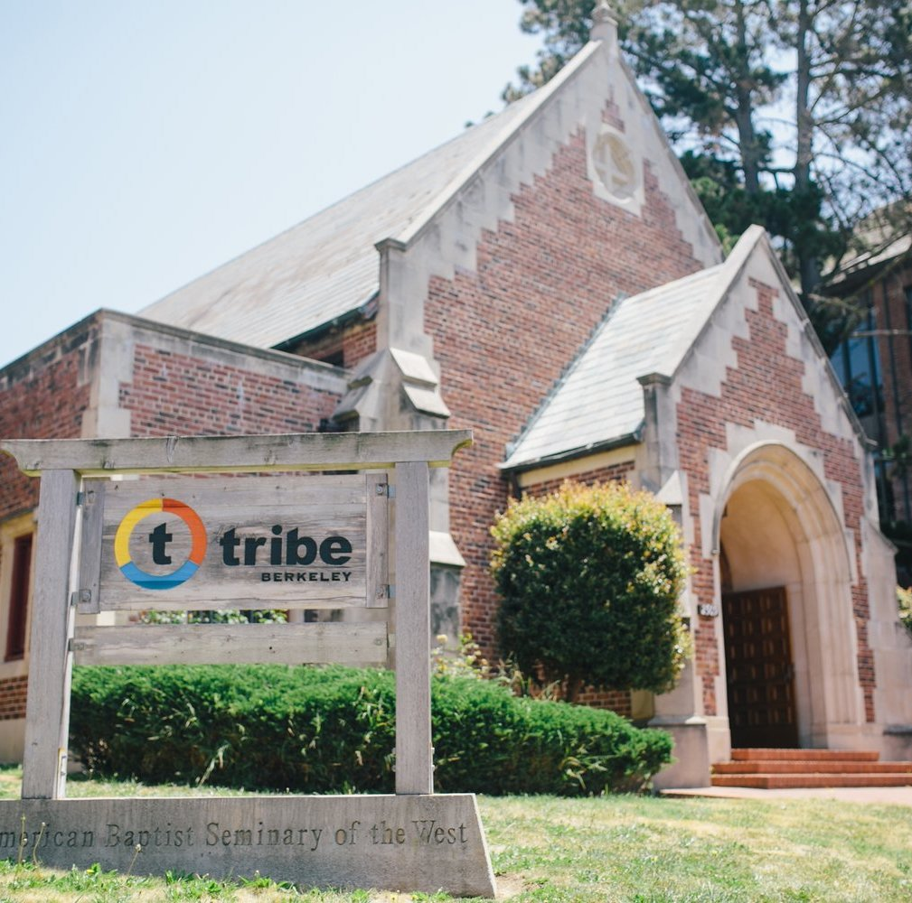
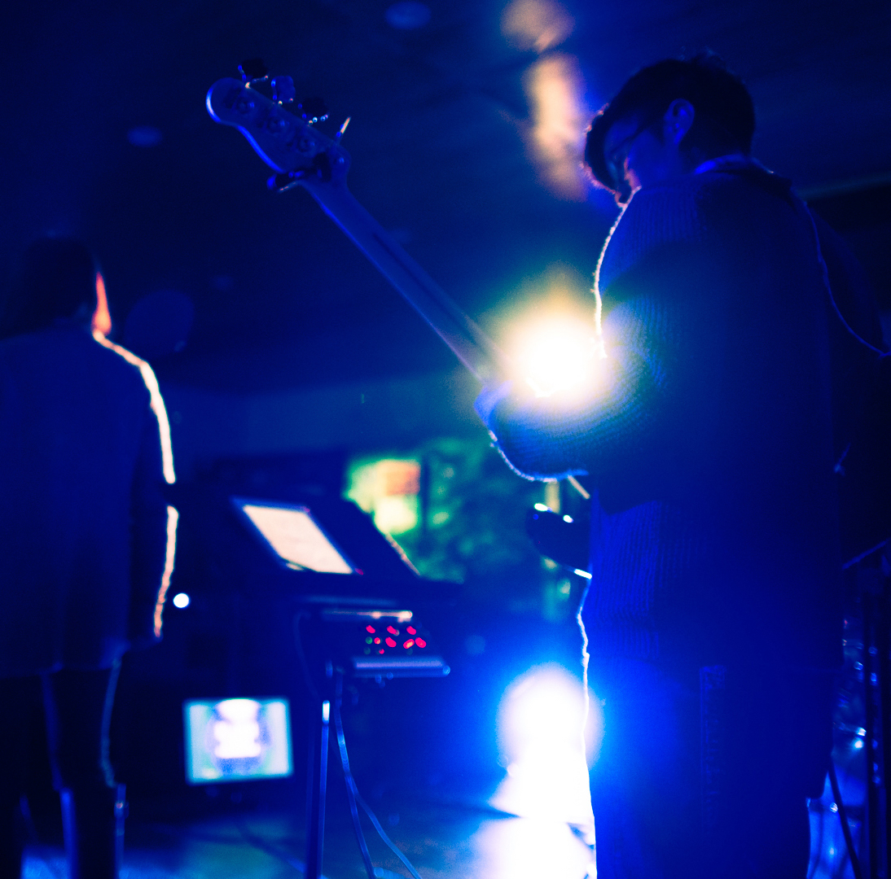
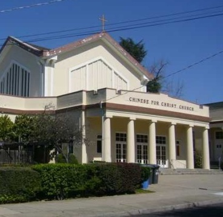
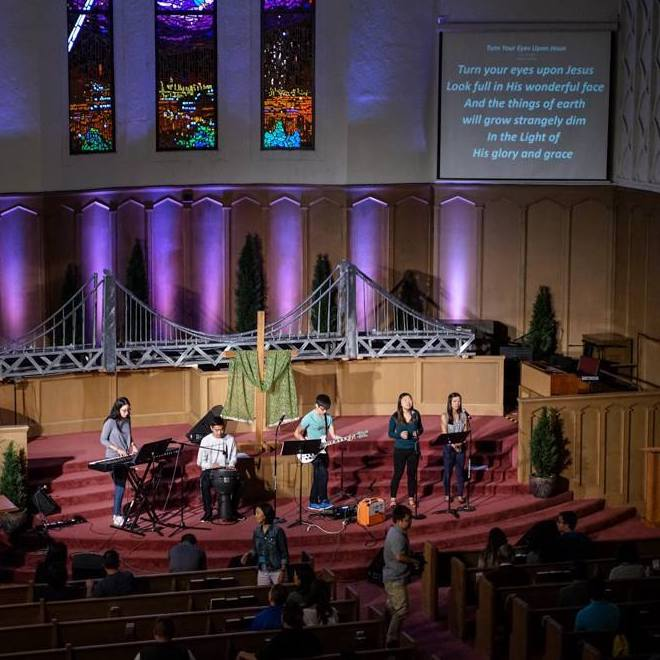
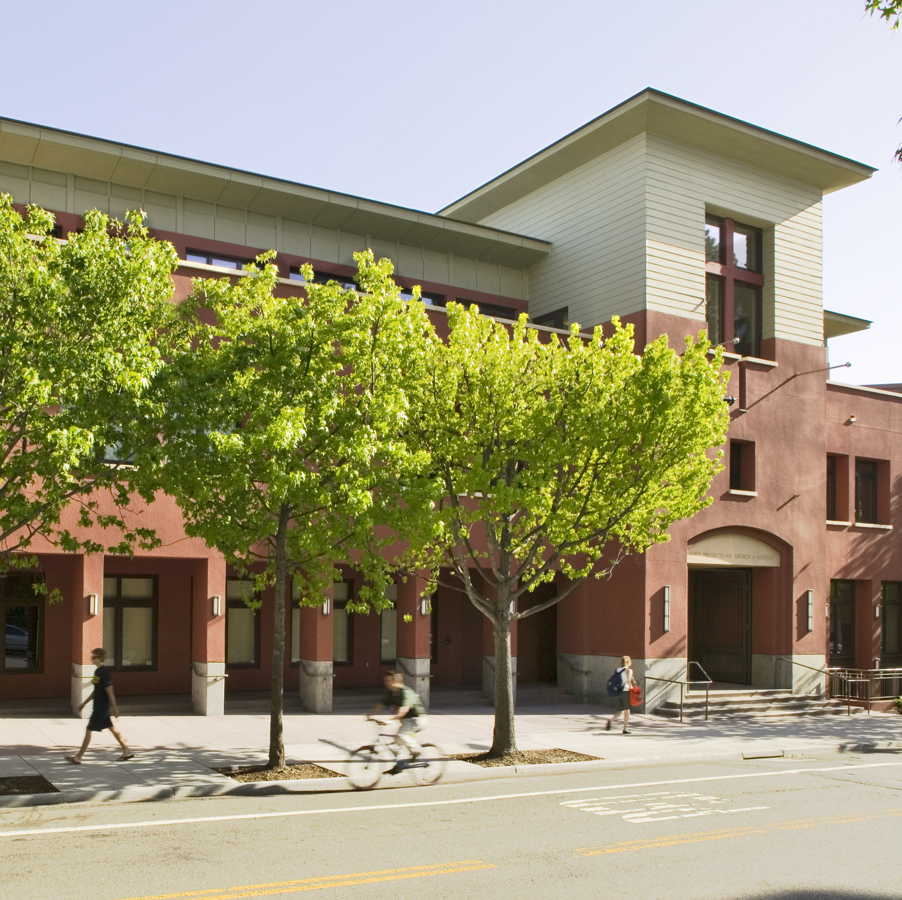
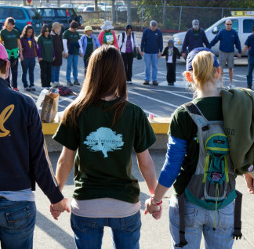

Churches
AACF is a para-church fellowship, which means we work alongside the church. Our aim at AACF is not to replace the church community, and we highly encourage you to get involved with a local church!

BERKELEY TRIBE CHURCH
2509 Hillegass Avenue, Berkeley
http://tribesites.org

CHANNEL CHURCH
2114 Berkeley Way, Berkeley
http://www.channelchurch.org/e/

CHINESE FOR CHRIST BERKELEY CHURCH
2715 Prince Street, Berkeley
http://www.cfcberkeley.org

CHRISTIAN LAYMAN CHURCH
278 Grand Avenue, Oakland
http://www.christianlayman.org
Rides are provided!

FIRST PRESBYTERIAN CHURCH OF BERKELEY
2407 Dana Street, Berkeley
http://www.fpcberkeley.org

SOLANO COMMUNITY CHURCH
Ocean View Elementary School
1000 Jackson Street, Albany
http://www.solanochurch.org